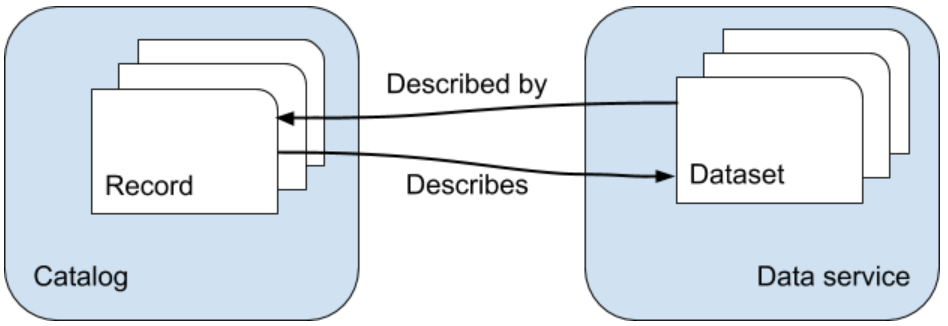

Background¶
When publishing data to the internet it is common practice to provide the data using standardized exchange protocols. Adopting standards facilitates a wide usage of the data. Within the geospatial domain, the OGC and ISO TC211 data exchange standards are industry standards and are often required by law, e.g. the European INSPIRE regulations.
The GeoCat Bridge extension takes care of exporting your map, data, styles and metadata to opensource mapping platforms that provide data exchange and catalog services that comply with these standards. Bridge will properly link service and metadata and vice versa, so users can easily bind to a service from a catalog search result or find the relevant metadata for an exposed dataset.
Serverside software components currently supported by Bridge are GeoServer, MapServer and GeoNetwork. Some options are available to migrate data to and expose data from PostGIS.
You can also choose to save the metadata and map symbology on your computer as files or in a GeoPackage so you can use them to publish on other software platforms (e.g. deegree, QGIS).
Supported server types and formats¶
GeoServer is the reference implementation of the Open Geospatial Consortium (OGC)_ Web Feature Service (WFS) and Web Coverage Service (WCS) standards, as well as a high performance certified compliant Web Map Service (WMS). GeoServer has a REST API, which can be used to configure feature types. Bridge uses this API to publish data. Geoserver internally uses SLD to define the visualisation of data layers.
MapServer is an Open Source platform for publishing spatial data and interactive mapping applications to the web. Originally developed in the mid-1990’s at the University of Minnesota, MapServer is released under an MIT-style license, and runs on all major platforms (Windows, Linux, Mac OS X). Mapserver services are defined by Mapfiles, which can be generated by Bridge.
GeoNetwork is a catalog for registering assets, such as spatial datasets. It contains a CatalogService for the Web (CSW) endpoint. GeoNetwork can operate on various metadata models via a plugin mechanism. It supports ISO19115-3, ISO19139, ISO19110 and DCAT metadata standards. GeoNetwork opensource software complies with the requirements of INSPIRE discovery services and metadata.
GeoStyler is a JS library used in the Shogun framework to create generic styles. GeoServer also has a plugin that allows to style layers using GeoStyler. Bridge does not make use of the GeoStyler library, but it does use the GeoStyler format internally as an intermediate format, which can be exported as a GeoStyler style file (JSON).
Mapbox Style is a style format that defines the visual appearance of vector tiles in the Mapbox JavaScript API. Bridge is able to generate a Mapbox style document.
PostGIS is a spatial extension to the popular open source Postgres database. Bridge is able to export any local data to a remote (or local) PostGIS database, allowing it to be consumed by data services.